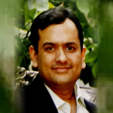

Established in 1989, the SUMAN RAMESH TULSIANI CHARITABLE TRUST is a brainchild of now octogenarian couple Smt. Suman Tulsiani and her entrepreneur husband Shri Ramesh Tulsiani. For them it is said, "You can find all kinds of great people in Society but it is very rare to find a sincere donor who donates without expectations." The Trust is dedicated to help and enrich people’s lives by providing financial assistance for Education, Healthcare, Culture and Welfare. Numerous projects and activities conducted under these four heads over the past nearly three decades have helped hundreds and thousands of students, patients, and the likes to overcome dire circumstances and avail an opportunity to rebuild their lives and dream again.
Our Trustees:
Mr. Ramesh Chandumal Tulsiani

Founder of Tulsiani Builders & Textiles Pvt. Ltd. (1973), he is a successful entrepreneur and has carved a niche for himself in the manufacture of textile yarn and real estate. Numerous landmark commercial and residential projects throughout the city of Mumbai bear testimony to his business acumen. Founder and settlor of the Suman Ramesh Tulsiani Charitable Trust (1989), he is a visionary and his far sightedness has helped give Philanthropy a new definition by way of the varied nature of the Trust’s projects over the years. He believes, "Your Greatness is not what you have, it's what you Give."
Mrs. Suman Ramesh Tulsiani
The better half and wife of Shri Ramesh Tulsiani, she is also a settler of the Trust, holding a Bachelor of Arts degree from the erstwhile Bombay University, where she stood first in her principal subjects of French and Psychology. She is passionately involved in the day to day activities of the Trust and has hands on approach in all the projects undertaken by the Trust since its inception. She is also a Trustee of the Matruchaya Trust (Goa) – looking after the welfare of orphans – and the Asian Heart Pediatric Charitable Trust – providing care for infants and children afflicted with congenital or acquired heart disease.
Mr. Shripad Mukund Kuvelkar
A Chartered Accountant by profession, he found his calling when he jointly formed Tulsiani Builders & Textiles Ltd. in 1973. His association has extended to the Trust as well over the years and he has been instrumental in giving shape to some of the landmark projects of the Trust, like the Suman Ramesh Tulsiani College of Engineering in Kamshet, Lonavala. He is also a Trustee of the Snehbandhan Charitable Trust – running a home for the aged – and The Peoples Medical Relief Society – running a hospital in Mumbai. Apart from this he is also a director on the boards of several public and private companies.
Mr. Raghuvir S. Kuwelker
A Mechanical Engineer by profession, he is a Director in the Tulsiani Group of Industries and is mainly overseeing the construction business of the Group.
Mr. Bahadur Lal Jain
A Chartered Accountant by profession and a full time Director of Century Textiles & Industries Ltd., he has also been a Senior President of Century Cement, Mayyar Cement, Manikgarh Cement and Sonar Bangla Cement. His rich exposure in this field has seen him being a part of numerous committees connected with the cement industry. He formed a Trust under the name of Bahadur Lal Amrutlal Jain Charitable Trust in 1987, which has built a students’ hostel and contributed to many educational and charitable causes over the years. He was declared as India’s most valuable CEO by the Business World Magazine in 2008 and 2010.
Mr. Bharat Agarwal

An Executive Director of the Vishwakarma Group engaged in businesses of Education, Retail, Manufacturing and Publishing, he is a Mechanical Engineer from the University of Pune. Under his leadership their premier flagship institute VIT (Vishwakarma Institute of Technology, Pune) became the first private college in the state of Maharashtra to have gained Autonomous Status from UGC, Govt. of Maharashtra and University of Pune. Today VIT, spread over three huge campuses, offers 50+ programs at various levels from KG to PG, employs 1400+ people, has over 20+ International tie-ups with more than 15000+ students on its rolls.